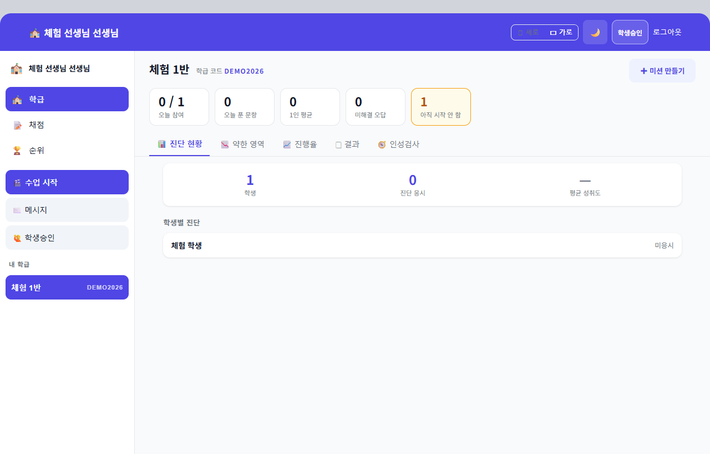
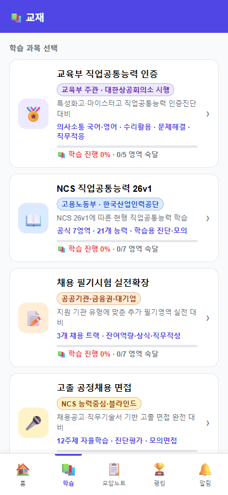
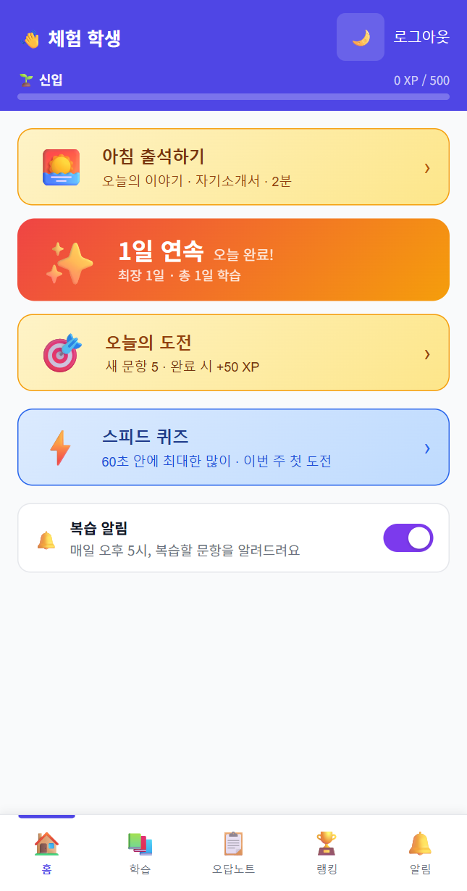

설탕과소금 스킬캠퍼스학생·교사 함께 사용
JOB고
취업 준비와 학교 지도를 한 흐름으로.
- 교육부 직업공통능력 인증평가
- NCS 직업공통능력평가
- 고졸 채용 필기시험
- 면접·자기소개서 실전 작성
- 고졸 채용 인성평가 훈련
설탕과소금앱 실제 화면설명보다 화면으로 확인하세요


- 01직업공통능력교육부 인증 5영역
- 02NCS 직업기초7영역 21하위능력
- 03채용 필기시험공공·금융·대기업
- 04면접·자기소개서학습에서 실전 작성까지
- 05인성검사모의검사·응답 분석
LEARN · TEACH · GUIDE
학생에게는 취업 역량을, 선생님에게는 든든한 교육 도구를.
학생은 다음에 할 일을 따라 학습하고, 교사는 여러 학급의 진행·약점·작성물을 같은 화면에서 이어 봅니다.
학생 순차 자율학습+기업별 실전 준비+교사 다학급 지도
학교를 아는 사람이 만든 현장 도구정보기술 교육 → 취업정책 → 학교경영 → 퇴임 후 현장지원
30년 넘게 특성화고 학생과 선생님 곁에서 쌓은 경험을 학교가 오래 함께 쓸 수 있는 앱과 서비스로 바꿨습니다.

STUDENT GROWTH PATH학생 자율학습·실전 준비
문제를 푸는 데서 끝나지 않고,
나의 취업 근거로 이어집니다.
두 번째 주인공 · 매일 갱신되는 취업 기회
특성화(마이스터)고채용정보→
학생이 실제 지원할 수 있는 공기업·공공기관·금융권·대기업 공고를 골라 공식 원문과 첨부서류까지 바로 연결합니다.
- 하루 3회 공식 채용 경로 확인
- 고졸·졸업예정자 지원 가능성 우선 판정
- 공식 원문·첨부서류 바로 연결
TEACHER WORKSPACE
교사용 수업도구
앱만 건네지 않습니다.
선생님의 수업과 학생 지도까지 준비합니다.
학교 업무 지원
수업 밖에서 필요한 것도 가까이.
앱과 채용정보를 중심으로, 선생님의 반복 업무를 덜어주는 자료를 연결합니다.